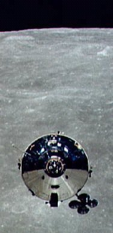

Carl Sagan Electronic Monument - For all of you who admire, respect, and miss the great Carl Sagan.
Carl Edward Sagan - An Electronic Monument to The Man
BEST VIEWED AT 800 x 600 PIXELS RESOLUTION
UPDATE: NOVEMBER 9, 2000
It has been a long, long time since I last updated! Much too long! But I must
admit to being a very, very busy fellow in the past year or so. I'm working my way up the
food chain where I work at Swedish Medical Center in Seattle, and when I'm not at work,
I'm being a happily married husband, so getting time to work on the CSEM is just plain
tough! Alas, I could not let Sagan's birthday pass without doing a serious update to the
site.
As you can see, I'm giving the CSEM a major
facelift. The old look was really starting to tire me, and it was time to renovate. I'm
also trying to streamline the graphics and the links so that navigation is easier and more
friendly than in the past.
But all of this work pales in comparison to the
awesome news that COSMOS has finally been re-released by
Ann Druyan and her legion of hard-working production people. For the longest time after
COSMOS was originally released by Turner Home Video, the series was out of print, hard to
find, and in danger of being lost altogether. Ted Turner was hesitant to give up the
rights, the musicians featured on the show went to court to get a larger slice of the
financial pie, and there were some television and home video people who opined that COSMOS
was just too outdated to be any good in the new millenium. A 20-year old program, many of
its scientific facets were in need of some minor--or even major--revision.
Well, as 2001 draws near, COSMOS is back out,
and back in action! What an event! The greatest Sagan masterpiece of all time is now for
sale in VHS format, DVD format, and even the music is re-packaged in a stunning 2-disc
set. As of this moment I do not yet have the funds to plunk down on the DVD but you can
bet your bottom dollar once I pay off the new computer I built last weekend (AMD Athlon
800mhz, 384 meg RAM, CD-R/W, the works, it truly hauls!!) I am nabbing myself a
copy of the DVD! I cannot wait to see COSMOS in crystal-clear DVD format, with huge
amounts of additional materials provided by Druyan and her Cosmos Studios team. I
literally cannot wait! This is probably some of the best news I've had all year!
As always, it is a true shame Sagan himself is
not around to share in the re-release. Carl probably would have appreciated the legacy he
left via COSMOS. His books and papers did much to project him into the public eye, but
COSMOS is his magnum opus; a superb triumph that assaults the highest peaks of television
greatness! More than just a PBS science show, COSMOS has spawned a world-wide following
that reaches into the hundreds of millions! (No joke! I am serious! An estimated
500,000,000 viewers have seen COSMOS to date! How is that for blockbuster ratings?!?!) As
Ann Druyan herself told me via e-mail, there is a world-wide resurgence going on over
Sagan's impact as a scientist, philosopher, and sage.
Which brings me to Carl's dark side.
Some of you have written me and politely
chastised me for the critical update I did back in April of 2000. (see below) How dare I
go after Sagan's character in such a fashion! Well, as much as I hate to admit it, Carl
Sagan was far from the ideal 'wise man' that we among the masses like to imagine he was.
Carl was a man tormented by deep personality flaws, which wrecked two marriages, destroyed
personal and professional relationships aplenty, and ultimately made him as many big-name
enemies as big-name friends. And as great as Sagan was on the screen and in print, so too
were his faults of equal magnitude.
But don't get me wrong. I still love Carl
Sagan. Not because I think he always was a great husband or a great dad or even a great
guy. Because, as far as I can tell, for much of his life, he wasn't. No. I love Carl Sagan
for the gift that he keeps giving via his books and, especially, via COSMOS. Whenever the
mundanity of life gets me down, or the pressures of the modern work place threaten to
steal my objectivity or my sense of purpose on this Earth, I watch COSMOS and it all snaps
back into focus again. Whether they knew it or not, Sagan and the others who produced
COSMOS went far beyond their initial goal. I am of the opinion that in the decades or even
centuries to come, COSMOS may be regarded as one of the great tomes of the 20th century; a
landmark work to measure and understand our age by. I find it so fitting that Druyan and
company have managed to get the series back into the public eye again! What a heroic
effort by Sagan's widow! Three cheers!
As for the departed Carl, I have admiration,
pity, and perhaps a smidgen of understanding. Nobody is perfect, and if Sagan was hardly a
perfect man in life, then we ought to try and forgive him after his death. I believe
whatever wrongs he wrought in this life were the results of his own insecurities and
fallible human needs. Is there anyone amongst us who does no suffer the same? Maybe we
don't all achieve the superstar fame that Sagan has achieved, but each one of us struggles
with emotional and mental baggage from a lifetime of hardships and disappointments. If we
work hard, we can take these struggles and use them to become better people. If we're
extra, extra lucky, we find a partner who can help us and guide us along the way.
Sagan had his Annie. I have mine. My wife Annie
O'Connell is the best thing that ever happened to me. Before I met her, I was headed down
my own foolish road filled with selfishness, carelessness, and laziness. But thanks to her
endless love, soaring patience, and superb mind, I am proud to say that I am three times
the man I was when I first met my Annie. We'll be married seven years come December 4th,
and they have been the best 7 years of my life.
Carl Sagan, I hope your Annie was as good for
you as mine has been for me.
Okay, enough of me getting sentimental.
Stayed tuned to this web space! Updates and renovations continue!
The Space Station is finally INHABITED!
New planetary missions are being proposed!
The work continues...........
And as always, my never-ending gratitude to the flood of support and input I get from all of you Sagan fans! I've gotten hundreds of e-mails from across the globe, and each week I keep getting more letters sharing your thoughts, ideas, speculations, and other wonderful tid-bits. Without all of you writing and supporting, I doubt I'd have had the energy to keep this web site alive. This site might break 50,000 hits before the end of the year, and that just amazes me!! This used to be a single-page tribute to Sagan, written in the daze when I was brand new to the web and Sagan's death was still fresh on my mind. I thought I might get a few hundred visitors. But almost 50,000?!? WOW! In my own small way, I feel like I am taking part in the Sagan/COSMOS resurgence, and that makes me ever so happy, I never met the man, and was never able to tell him how much COSMOS affected me. But maybe my little web site helps keep Sagan' work and his message alive. My web site is just a small brick in the pyramid of Sagan-dedicated web sites out there, with Druyan's www.carlsagan.com standing at the apex!
---Brad Torgersen, subodeon@w-link.net, November 9th, 2000
UPDATE, APRIL 5th, 2000
Well, it's been FOREVER since I updated this site! But
seing as how my old, beloved ISP www.cio.net has finally
gone under, and I have been forced to use a new ISP (www.w-link.net), the time is ripe for a bit of an
overhaul. Watch this space for the next few months and you should see some new material
added, as well as a wealth of interesting links, and maybe even some new pictures and
quotes, etc.
I've been reading Keay Davidson's "Carl Sagan: A
Life" biography and it has certainly been an eye-opener on our dear departed Carl!
I've got mixed feelings about the pre-Druyan version of Carl Sagan. If the bio is even
half accurate, the pre-Druyan, or "Young Sagan", was a complete asshole! A
self-important creep! Disappointing and hard to believe, especially since Sagan's writing
and his TV appearances make him seem so amiable, urbane, a guy you'd like to cozy up to.
The bio paints a very different picture, one that is hardly flattering. I'm about halfway
through, and should post a lengthy opinion piece here once I get done with the entire
thing. It's an engrossing read, to be sure.
I guess I can't be too hard on Carl. Each of us, in our own way,
has a dark side. And many of us learn to be nicer, more considerate, as we get older.
There are hints that once Ann Druyan and Carl got together, Carl became a different man. I
hope this was/is true, but will be understanding if it is not. Often, our greatest
geniuses are also the ones who have the worst shortcomings. Carl's intellectual brilliance
and genius were apparently matched by his egocentricisms and personality quirks. No wonder
he developed a bad reputation among some circles in the science and entertainment
universes.
As stated earlier, watch this space for future updates!
And no matter what kind of person Carl may have been in his
private life, the startling and enlightening messages conveyed by COSMOS and Sagan's many
books cannot be denied. I think that's what I fell in love with to begin with, not the man
as much as the man's message. I believe in the wisdom contained in those words, and think
they will always reflect kindly on Sagan.
---Brad Torgersen, subodeon@w-link.net, April 5th, 2000
My thoughts and feelings on Carl Sagan The Hero...
SPECIAL
THANKS: In the two years since I put up this web site, I have been overwhelmed
by the huge number of visitors, and by the marvelous e-mail that you all have sent me!!
I've gotten e-mail from every continent on the planet, from people in every walk of life:
professors, students, business people, young, old, men, women, children, television and
science industry professionals, and many a simple Sagan fan. Every one of you has
expressed thoughts and feelings very like my own, and every one of you has given me hope
and energy for our future on Earth and in space. I really had no idea that Carl Sagan's
influence extended so far, or into so many lives. I thank each and every one of you for
supporting this web site, and for supporting the goals and the dreams of Carl Sagan!! May
Carl's work continue, and may we all play a part in that work. We're living the future
NOW, and it's up to us to make our dreams become reality!!
Carl Sagan, NASA. Carl Sagan, astronomy. Carl Sagan,
moon landing. Carl Sagan, SETI. Carl Sagan, BETA. Carl Sagan, META. Carl Sagan, Planetary
Society. Carl Sagan, celebrity. Carl Sagan, Contact. Carl Sagan, Pale Blue Dot. Carl
Sagan, Earth. Carl Sagan, Venus. Carl Sagan, Mars. Carl Sagan, Jupiter. Carl Sagan,
Mercury. Carl Sagan, Neptune. Carl Sagan, Pluto. Carl Sagan, Uranus. Carl Sagan, comet.
Carl Sagan, asteroid. Carl Sagan, Saturn. Carl Sagan, Europa. Carl Sagan, evolution.
 Why humans must colonize space... and what you can do about it!
Why humans must colonize space... and what you can do about it!
December 1998 marked the 30th anniversary of the Apollo 8 voyage to the moon; the very first journey wherein human beings actually left the grasp of Earth's gravity and visited another planetary body in space! In 1968, Apollo 8 served as a peaceful capstone to a very troubled and distraught year. Many have said that Apollo 8 actually saved the spirit of 1968. Now that we look back at Apollo 8, and all the Apollo voyages to our nearest heavenly neighbor, we are aware of their triumph for the human race. We are also aware that the thirty years since the Apollo program have been years during which the world's crewed space programs have suffered. The awesome Saturn 5 boosters no longer carry humans to the moon. There are no factories or assembly lines in existence that even produce the hardware necessary to take humans to the moon, Mars, or any other solar body. The once juggernaut-like Soviet space program--which offered glimpses of the kind of muscle needed to forge ahead into the Cosmic Deep--is now subsidized by N.A.S.A. which has budgetary problems of its own. What have we done? Where did we lose our way? The various political and industrial factions of the planet can point all the fingers they want, trying to place blame for our lack of outer-space vigor. But in the end, it is we the citizenry of the Earth who are to blame. Governments are only tools in our hands. If there are no lunar colonies, if we do not yet have spacecraft taking pioneers to the moons of Jupiter and Saturn, then we are to blame and it is we who must make a change for the future. But do not give up hope! A new millennia is approaching and the seeds for a new Space Age have already been planted and are beginning to sprout. But why should we go? "What is space good for?" some say. "How can it make the lives of humans any better?" or, perhaps most important, "Why should we spend money for trips into outer space?" Here are some answers to these questions, as well as reasons as to why human exploration and colonization of space is so important for our sake, and the sake of our children.
 MANY BASKETS, MANY EGGS: Anyone who has been to a movie theater or video store lately has either
seen or heard about the movies "Deep Impact"
and "Armageddon".
Or maybe you've read books like Larry Niven's epic "Lucifer's Hammer"? Their
collective story is as old as science fiction itself: large, menacing body(s) from outer
space threaten to collide with and destroy life here on Earth. And while films like "Armageddon" are
remarkably ludicrous in their ignorance of real
science and astronomical fact, they do have one overwhelmingly good virtue: they make
the viewer aware of the fact that Earth's biosphere can and will be severely damaged by
impacts from celestial bodies that intersect Earth's orbit. If the celestial body is large
enough, such as the mammoth asteroid postulated in "Armageddon",
then nearly every living thing on Earth faces extinction. One of the best ways to ensure
the survival of Earth life is to spread that life across many bodies in the solar system,
or even place it onboard space stations in planetary or solar orbit. That way, even if a
large impact does occur on Earth and human life (or all life) is extinguished, there will
be other worlds or space stations where that life will still live and that can eventually
be used to re-populate the Earth once the environment and climate settle down after the
impact has happened. It would be like having one or many biblical 'arks' spread across the
solar system. There would be safety in numbers! Any catastrophe that hits Earth need not
mean the end of humans or our precious biosphere.
MANY BASKETS, MANY EGGS: Anyone who has been to a movie theater or video store lately has either
seen or heard about the movies "Deep Impact"
and "Armageddon".
Or maybe you've read books like Larry Niven's epic "Lucifer's Hammer"? Their
collective story is as old as science fiction itself: large, menacing body(s) from outer
space threaten to collide with and destroy life here on Earth. And while films like "Armageddon" are
remarkably ludicrous in their ignorance of real
science and astronomical fact, they do have one overwhelmingly good virtue: they make
the viewer aware of the fact that Earth's biosphere can and will be severely damaged by
impacts from celestial bodies that intersect Earth's orbit. If the celestial body is large
enough, such as the mammoth asteroid postulated in "Armageddon",
then nearly every living thing on Earth faces extinction. One of the best ways to ensure
the survival of Earth life is to spread that life across many bodies in the solar system,
or even place it onboard space stations in planetary or solar orbit. That way, even if a
large impact does occur on Earth and human life (or all life) is extinguished, there will
be other worlds or space stations where that life will still live and that can eventually
be used to re-populate the Earth once the environment and climate settle down after the
impact has happened. It would be like having one or many biblical 'arks' spread across the
solar system. There would be safety in numbers! Any catastrophe that hits Earth need not
mean the end of humans or our precious biosphere.
THE BEST DEFENSE IS A GOOD OFFENSE: Of course, if you've seen either "Deep Impact" or "Armageddon"
you'll realize that humans should not just stand by and let their home world get smashed
to pieces by celestial debris. In this age of space flight, we can finally stand up and DO
SOMETHING about all that random space junk that is threatening to make our lives here on
Earth very short. In addition to having many separate self-supporting biospheres on many
other planets or on space stations, another reason we have to go into space is so that we
can develop and maintain the space industry necessary to produce hardware that can be used
to guide or deflect potential impactors from the orbit of Earth or any colonized world. We
currently do not have any spacecraft capable of journeying to or deflecting/guiding errant
space bodies. But with more money and more material at their disposal, the various space
programs of Earth could assemble--preferably in cooperation with one another--space
infrastructure and space vehicles that would be able to detect, track, rendezvous with,
and alter the course of, most space bodies that could threaten our planet. Humans have
made their way in this world by virtue of
their wits and their ability to bend fate to their will. It is the same with the celestial
impact threat. We have the technology to ensure our safety on this world, and on other
worlds. All we have to do now is make up our minds to spend the time, money, and effort
necessary to get those people and all that technology into space where it can do the most
good for all of humankind. Do we dare to tempt fate? From a historical perspective, I
think it is best if we do not. They once said the S.S.
Titanic was unsinkable. The inhabitants of Pompeii were
convinced that their local 'mountain' was as benign as a summer's breeze. Some said that
the NASA space shuttle system was so
well designed, no mishaps or accidents could ever occur. Obviously, all of these
presumptions were found to be wrong, in the most horrific way possible! We must not let
ourselves be fooled into thinking that an asteroid or comet impact cannot happen to us. As
the beginning sequence in the movie "Armageddon" says so well: It has
happened before... It WILL happen again.
PROTECTING THE ENVIRONMENT: One of the great misunderstandings of our modern age is that space science
and space technology somehow threaten our ecosystem here on Earth. One of the most glaring
examples of this misunderstanding was the protestation of the launch of the Cassini probe to Saturn. In their
ignorance of the facts concerning this historic space probe, many environmentalists
attempted to block its launch. The assurances of NASA and its subcontractors were of
little comfort. Convinced of science's supposed 'contempt' for the Earth's fragile
ecosystem, these environmentalists tried to stop a space mission that could offer the most
profound insights into the nature of Earth's benign atmosphere, and possibly into the origins of life itself. This forced division between the life sciences
and the space sciences is absurd at best. The two schools of research have the most
marvelous and interdependent relationship! Our various space probes that
have visited the other worlds in our solar system, and those satellites and crewed
orbiters that study our own planet, have shown us the dangers of ozone layer depletion, global warming, nuclear
winter, and the pollution of our air and water. Using the panoramic eye afforded us by
space flight, we can see the dreadful effects of deforestation, strip mining, ocean
dumping, and other industrial hazards. Solar probes and observatories in orbit tell us
intimate details about our Sun, so we can learn how solar cycles and other solar activity
affect life on earth. Weather and meteorological studies from orbit offer day to day
monitoring of decade and century long global warming trends. In the very deepest sense,
the development of space technology and the flight of space missions is an integral part
of our collective effort to recover and preserve our environment. If we curtail our
abandon these vital space efforts that benefit environmental protection and restoration,
it will be like shooting ourselves in the foot to spite our leg. The work must continue so
that we do not lose our grasp on the big environmental picture; a form of
short-sightedness that got us to this critical environmental state in the first place.
Finally, in establishing ourselves in space we gain a foothold on territory that is safe
for science and engineering projects that are otherwise dangerous on Earth. We also open
up a realm that could be used as a repository for hazardous materials. Places like the
moon and the asteroids have no ecology to spoil or air to pollute. If nuclear waste and
other industry byproducts are a threat to Earth life, we can remove them from the planet
altogether. If necessary science and industry projects damage life on our planet, we might
just as well conduct them in space or on another world where they will be contained and
safe. There is an infinite and ready-made laboratory above us. All we need do is use it.
 UNIFYING THE NATIONS: When
crewed space travel was born, it was in the heated cauldron of international tension and
ideological confrontation. At first, it seemed that the various militaries of the
Earth--namely those of the United States and the now defunct Soviet Union--would turn
outer space into just another military camp, dominated by laser battle stations and
nuclear bomb tossing satellites. But very quickly, and to our collective good fortune, the
contest of space was to become a (mostly) peaceful one. Now, at the end of the 20th
century, we are seeing for the first time what grand progress can be accomplished by the
alliance of political powers for the purpose of space exploration. As of the writing of
this essay, far above our heads, the most intricate and imposing space architecture
project in our history is being conducted. The
International Space Station is a collaborative effort between powers and politics that
were once at deadly odds with each other. In their union in outer space we see a potential
model for further union on Earth. If the construction and maintenance of the ISS does
nothing else, the bringing together of so many brilliant people from so many nations for such a grand and awesome project, justifies the cost. It
is hard for us to justify contention and armed conflict over scraps of land here on Earth
when some of our greatest heroes work in peace and cooperation in the heavens above. You
don't have to be a space enthusiast or even a casual science observer to realize that
anything which brings international cooperation and good will can benefit us all. We as a
species have already sold ourselves into dreadful debt for the sake of nuclear holocaust.
It is time that we recoup that loss, turn the tide of conflict, and use that same
technology to launch our destiny to the stars. We owe it to ourselves. We owe it to our
children. We owe it to Earth.
UNIFYING THE NATIONS: When
crewed space travel was born, it was in the heated cauldron of international tension and
ideological confrontation. At first, it seemed that the various militaries of the
Earth--namely those of the United States and the now defunct Soviet Union--would turn
outer space into just another military camp, dominated by laser battle stations and
nuclear bomb tossing satellites. But very quickly, and to our collective good fortune, the
contest of space was to become a (mostly) peaceful one. Now, at the end of the 20th
century, we are seeing for the first time what grand progress can be accomplished by the
alliance of political powers for the purpose of space exploration. As of the writing of
this essay, far above our heads, the most intricate and imposing space architecture
project in our history is being conducted. The
International Space Station is a collaborative effort between powers and politics that
were once at deadly odds with each other. In their union in outer space we see a potential
model for further union on Earth. If the construction and maintenance of the ISS does
nothing else, the bringing together of so many brilliant people from so many nations for such a grand and awesome project, justifies the cost. It
is hard for us to justify contention and armed conflict over scraps of land here on Earth
when some of our greatest heroes work in peace and cooperation in the heavens above. You
don't have to be a space enthusiast or even a casual science observer to realize that
anything which brings international cooperation and good will can benefit us all. We as a
species have already sold ourselves into dreadful debt for the sake of nuclear holocaust.
It is time that we recoup that loss, turn the tide of conflict, and use that same
technology to launch our destiny to the stars. We owe it to ourselves. We owe it to our
children. We owe it to Earth.
WE NEED BREATHING ROOM: In
his book "Pale
Blue Dot" Carl Sagan makes much of the point that we are a species that has been,
for most of our history, on the move. Not content to stay put or stagnate, we are always
seeking new mountains to climb, new valleys to settle, and new resources to use. But there
are almost 7 BILLION human beings on the Earth at the turn of the new millenium! We've run
out of new lands to conquer. If we feel crowded or don't like our neighbors or just want
to explore a new region, there are very few places left on earth where we can do that. The
deep oceans offer a possibility, but in trying to live on or in the sea we encounter many
of the same pollution and industrial problems that we have here on dry land. So what is
the answer? I think that space is truly our species' Final Frontier. In our own solar
system there are countless square kilometers of virgin land, waiting.
And unlike virgin lands of ages past, this new frontier has no ecology to threaten or
life-filled oceans to pollute. The atmospheres of other worlds (if they exist at all) are
typically far more hostile to life than we could ever hope to make them ourselves.
Therefor there are no forests to cut down, no swamps to drain, no marshes to pave over and
no habitats to destroy.
 There are only resources. Vast
amounts of them! And, poetically, when we colonize space we will be CREATING new life
where none existed before. Instead of destroying life that once was, we will be giving
birth to life that might never have been. And in doing so, we will be creating new room
for the people of Earth to inhabit and build upon. Though our current technology is too
crude to lift even a fraction of our seven billion into space, it may be that in the
centuries to come we will find faster, safer, and cheaper ways to get into orbit and
beyond. Though some still doubt our ability in this matter, it may become possible for us
to remove significant portions of the human
race from the Earth and 'plant' them in colonies and space architecture across the solar
system. Such planned evacuation would greatly relieve the burden we place on the Earth's
environment, while giving countless people the chance to build new lives on new worlds,
and experience the heady bliss of pioneering. And all of this before we ever leave our own
solar system! Just imagine what marvelous new territories await us in other
star systems!! As Sagan himself has said so well: when the Earth and the other
planets are all explored, when we have become complacent about our state of being in this
solar system, when we once again feel the urge to wander, the planets and worlds of other
stars will quietly beckon.
There are only resources. Vast
amounts of them! And, poetically, when we colonize space we will be CREATING new life
where none existed before. Instead of destroying life that once was, we will be giving
birth to life that might never have been. And in doing so, we will be creating new room
for the people of Earth to inhabit and build upon. Though our current technology is too
crude to lift even a fraction of our seven billion into space, it may be that in the
centuries to come we will find faster, safer, and cheaper ways to get into orbit and
beyond. Though some still doubt our ability in this matter, it may become possible for us
to remove significant portions of the human
race from the Earth and 'plant' them in colonies and space architecture across the solar
system. Such planned evacuation would greatly relieve the burden we place on the Earth's
environment, while giving countless people the chance to build new lives on new worlds,
and experience the heady bliss of pioneering. And all of this before we ever leave our own
solar system! Just imagine what marvelous new territories await us in other
star systems!! As Sagan himself has said so well: when the Earth and the other
planets are all explored, when we have become complacent about our state of being in this
solar system, when we once again feel the urge to wander, the planets and worlds of other
stars will quietly beckon.
KNOWLEDGE FOR ITS OWN SAKE: Perhaps least tangible of all the arguments for
space colonization and exploration is the argument for increasing our raw knowledge of the
universe. Knowing about quasars or elliptical galaxies or black holes doesn't put food on too
many tables. The fact that discs of pre-planetary
matter are being found around some  stars in the Milky Way
galaxy rarely makes headlines or buys much public attention. That the universe is far
larger and far older than men of ages past had ever guessed is not displayed garishly on
highway billboards or broadcast in flashy 'news bites' between your favorite television
program. So what good is this data? How do these discoveries benefit anybody except for a
tiny portion of the human population: professional scientists? Though it may not seem like
it at first, these abstract and removed discoveries do count for something; in the deepest
way that anything ever can. These discoveries illuminate the very nature of our universe,
and therefor illuminate (at least in part) our own nature and our place within this vast
cosmos. We are necessarily inspired and humbled by these findings, and are challenged to
think bigger and deeper thoughts than we might otherwise have. Humans are not an empty
race. Our rise to power on this globe was not done through vacant musings or trivial
consideration. At each step in our development, there have always been those among us who
dared to think farther, wonder longer, and question harder than ever before. With each
probing we have divined a little more about this universe and our place within it. We have
come a little bit closer to understanding our true role and our
responsibility. Such revelations and such illumination, I think, are worth all the money
that we can possibly spend on space exploration. Going into space isn't just about
pragmatics, its about the deepest longings and motivations of the human soul. In the last
few decades our discoveries in and about space have revolutionized our ideas about who we
are, where we are going, and where we have been. In visiting the stars through our
instruments and our science we have discovered precious knowledge and insight to match
anything in lore or legend. Should we not continue to gather more of this information? For
our mental, emotional, and spiritual well being as an intelligent species, I think that we
must.
stars in the Milky Way
galaxy rarely makes headlines or buys much public attention. That the universe is far
larger and far older than men of ages past had ever guessed is not displayed garishly on
highway billboards or broadcast in flashy 'news bites' between your favorite television
program. So what good is this data? How do these discoveries benefit anybody except for a
tiny portion of the human population: professional scientists? Though it may not seem like
it at first, these abstract and removed discoveries do count for something; in the deepest
way that anything ever can. These discoveries illuminate the very nature of our universe,
and therefor illuminate (at least in part) our own nature and our place within this vast
cosmos. We are necessarily inspired and humbled by these findings, and are challenged to
think bigger and deeper thoughts than we might otherwise have. Humans are not an empty
race. Our rise to power on this globe was not done through vacant musings or trivial
consideration. At each step in our development, there have always been those among us who
dared to think farther, wonder longer, and question harder than ever before. With each
probing we have divined a little more about this universe and our place within it. We have
come a little bit closer to understanding our true role and our
responsibility. Such revelations and such illumination, I think, are worth all the money
that we can possibly spend on space exploration. Going into space isn't just about
pragmatics, its about the deepest longings and motivations of the human soul. In the last
few decades our discoveries in and about space have revolutionized our ideas about who we
are, where we are going, and where we have been. In visiting the stars through our
instruments and our science we have discovered precious knowledge and insight to match
anything in lore or legend. Should we not continue to gather more of this information? For
our mental, emotional, and spiritual well being as an intelligent species, I think that we
must.
DUTY TO THE DREAM: It is often said by politicians, businessmen, and
even ordinary folk on the street that space exploration, crewed or otherwise, is too
expensive. It costs too much for too little return, they say. In a time when a legion of
other concerns assault us--disease, poverty, the environmental and education crises,
nuclear proliferation, violence on the street and in the home--how can we in good
conscience spend even a dime on 'pie in the sky' space programs? Shouldn't we be spending
every last yen, pound, and dollar on these 'priority' issues instead of satiating the pipe
dreams of a privileged few? Well, maybe. But consider this: from the very moment when the
first humans looked up into the star-filled night sky, we have as a
people experienced a deep longing to know and understand what those bright points really
are. For countless generations we have speculated, debated, authorized, criticized, and
puzzled over the nature and portent of those  myriad shining specks. We,
at the end of the 20th century A.D. are the first generation to be able to find out. For
thousands of years, men and women dreamed about going to the moon. In 1969, two men from
Earth fulfilled the dreams of many millions of nights. For just as long, men and women
have wished to visit some of the other worlds: Mars, Jupiter, and
Venus. We now have the technology and the science to permit us to go to these
places--for real!--and bring closure to all those open-ended questions posed by our
ancestors. Shall we, in our ignorance and our lack of vision, turn away from that long
history? How much would men like Copernicus,
Brahe, Keppler, or Galileo have given to
stare, just once, into an image taken by the Hubble
Telescope? How much would Hypatia
of Alexandria or Robert Goddard or
myriad shining specks. We,
at the end of the 20th century A.D. are the first generation to be able to find out. For
thousands of years, men and women dreamed about going to the moon. In 1969, two men from
Earth fulfilled the dreams of many millions of nights. For just as long, men and women
have wished to visit some of the other worlds: Mars, Jupiter, and
Venus. We now have the technology and the science to permit us to go to these
places--for real!--and bring closure to all those open-ended questions posed by our
ancestors. Shall we, in our ignorance and our lack of vision, turn away from that long
history? How much would men like Copernicus,
Brahe, Keppler, or Galileo have given to
stare, just once, into an image taken by the Hubble
Telescope? How much would Hypatia
of Alexandria or Robert Goddard or Christian Huygens
have given to be able to take Aldrin
and Armstrong's
places, and be the first humans to step out onto the surface of another world? How much
would ANY of our ancestors, chained to their limited times and their isolated places, have
given to know even a small fraction of what we, in our time, know of the cosmos? I
say this: how can we, in good conscience, deny the fulfillment of all that desire? How can
we, knowing all that we do and having the power to know even more, turn our backs on the
precipice off of which we are ready to fly? I think that if those generations past could
see us now, they would literally scream at us to keep going. Sagan said it best, where our
ancestors are concerned: we see for them, as they first saw for us. If we deny
them that vision, if we cave in to our petty and myopic lifestyles that promote triviality
and immediate gratification, then we commit the greatest of crimes. Generations past would
damn us for our foolishness in surrendering our
power at the very point when we are learning how to use it. Generations of the future will
damn us for making their dreams that much harder to achieve. Shall we become known, to
past and future humans both, as the Generation of Cowards? Are we, who have the keys to
the cosmos in our hands, too weak of spirit and too frail of vision to unlatch the locks
and let the doors of the cosmos swing wide? Ask yourselves these hard questions next time
you feel yourselves turning away from the dreams of space flight. How can we afford to
spend on space? That is not the true question. The question is: how can we afford to NOT
spend? The eyes of past and future are upon us. Let's make sure our mark in time is a
worthy one.
Well, okay, so what can *I* do about it???
TEACHERS: If you're a school or college instructor, you can make sure that lessons and class material tie into space and space-related issues. Even if you're a social studies or gym or art teacher, you can easily make cross-references to matters of space travel and space exploration. Gym: the exercise necessary to be in shape for the astronaut program. Art: impressions of the images from the Hubble telescope. Social science: the impact of space flight on modern society, or even lessons on the history of the 60's space programs. Etc. Etc. These are just a few examples. Lets get our kids thinking about space!
PARENTS: All learning begins in the home. If you're concerned about space exploration, then you owe it to yourself to get educated and to educate your kids on the issue. Most libraries and many book stores have LOTS of interesting videos and books on space travel. Television programs on PBS,TLC, The History, or The Discovery Channel(s) frequently feature space exploration. Find out when they are on and watch them with you kids! If you're lucky enough, try and get your hands on rentable space video series or even Sagan's COSMOS series and watch those with your kids. Start discussions about space or the space shuttle or even something on the news that was about space. You and your kids can learn together! Wonder and excitement over space travel is not just for juveniles.
KIDS & TEENAGERS: If you're a child or young adult yourself, then you're in the best position of all because you've still got the most life to live. You'll see space exploration the likes of which the older folks never dreamed of. Better yet, try and get involved. Study and learn about science and technology. Watch TV that deals with science and space. Get your friends involved in fun science and space-related projects like web pages or model rocketry or maybe even a school-sponsored 'simulation'. My old highschool used to 'fly' two week long 'shuttle' simulations for their science classes. You can do the same. The future of the human race is in YOUR hands! Get psyched! Get educated! Space is yours for the taking.
POLITICIANS: You don't have to be a scientists or an 'egg head' to care about space travel. If you're a politician of any stripe or on any level, take some of the above mentioned steps and get yourself educated on the issues. Then put that knowledge to work and start pushing for more space and space-related policies on local and national levels. You have the power to put all that government money to good use! Shall we waste it on more overpriced killing machinery or partisan backstabbing? Or shall we rise above and take the nation or nation(s) to a literally higher plane!! Your citizens *want* to trust you. Your citizens *want* you to do the right thing. Even if it seems unpopular or far fetched at first, just remember how we got to the moon: one speech by one influential politician! It changed EVERYTHING and put us on course for The Sea of Tranquility! That can be done again.
BUSINESS & CORPORATE TYPES: Space can pay for itself. Currently, space brings in billions upon billions of dollars in hard CA$H for those who want it. And that is just the tip of a very big, almost endless, iceberg. Again, you must educate yourself on the issues. Then work to find out where and how your company or business can make an impact. Whether that is lobbying the politicians, donating money for science and space research, getting directly involved in space science and research, or at least contributing funds and materials to local educational institutions so that they can get involved. Most importantly: business cannot, I say again, CANNOT be run for profit alone. To borrow from Sagan: the unrestrained pursuit of profit poses serious threats to the soul of the nation. Where science and the environment are concerned, business is the best friend AND worst enemy. Do everyone a favor, run your business with a conscience. Make mission statements that aspire to more than just money. Dedicate your company and yourself to bettering the future of humanity. In the pursuit of outer space, everybody is invited to play.
MOVIE, RADIO, & T.V. PEOPLE/EXECUTIVES: You folks have the popular imagination in the palms of your hands. You can either squander it on mindless crap and nit-wit triviality, or you can dig deeper and rise higher than the 'industry standard'. You have the power to influence millions all over the world. You're responsibility is awesome! Please, make films and T.V. programs with import. Get the facts, get the science, and get some solid material together. Your public does not want to have 'dumbed down' material! We're all, yes I said ALL, starving for quality and meaty viewing/listening. In the past few decades we've watched commercial television and film slide down a mindless toilet. But you can bring it back into the light. Make shows that matter! Wake the people up to the real issues at hand. In point of fact, Carl Sagan's COSMOS series has been seen (and re-seen) by over 500,000,000 viewers world wide. How many sit-coms, talk shows, goofy specials, or other mindless programs can tout that kind of loyalty or viewership? Be responsible. Be smart. Develop and promote programs that encourage learning and science; especially space!
PASTORS, PRIESTS, CLERGY OF ALL TYPES: Please, don't teach your parishioners to hate or fear science or space travel. Regardless of what God or God(s) you believe in, there is room in very human heart for the simple beauty and hope that space travel and the sciences in general can give us. Science has already made marvelous contributions to the betterment of all human life everywhere. In teaching a fear of science or the rejection of the benefits of science, we risk plunging our civilization back into the dark ages. It took a lot of work and blood, much of which was shed by religious and faithful people, to get to the scientific level we are at today. Supporting science or space travel is not denying your faith. Without going into too much detail, I offer this idea: the God(s) or Creator(s) gave us hands and brains and hearts so that we could figure this world out and do what is right for all humankind. Cannot space travel and science be a result of that divine gift?
SCIENTISTS: Don't develop an 'ivory tower' mentality. Science is supposed to be for the many, not for a privileged few. If it seems like the public is ignorant of scientific issues, then get out there and roll up your sleeves and start educating people. If you're a social scientist, DO NOT teach contempt for the scientific method or for the 'hard' sciences. Social science is as important to the understanding of the human condition as anything else. But not at the expense of logic or scientific facts. Social and material science go hand in hand. Work together to reach your goals. Educate as many as you can. Never treat the public like they are 'dumb' or like they can't figure things out. People are very smart if given the chance. The more you get in the public eye and prove your worth, the less threatened the public will feel by academia and science. Cooperate with each other, above all else.
ASTRONAUTS & SPACE INDUSTRY PEOPLE: You're already doing more than anybody else! Keep up that hard work! We're sorry that we keep cutting your funding and tossing silly political agendas at you. But don't give up the quest! Everyone is proud of you. And, with a little luck, we can turn a few social screws and make your lives a lot easier. My only request is that you do what everybody should be doing anyway: informing the people around you. Too many people know too little about the value of the space program(s). You, perhaps better than anyone else, can give them the facts and enlighten them. In the mean time, keep training, keep building, keep engineering, and keep researching. You're building tomorrow's future TODAY!
EVERYBODY ELSE: It is impossible to list in detail every profession that should be concerned with space travel and space science. I've tried to hit upon, by category, those I see as most relevant and important to the subject at hand. For anybody who does not fall into any of the above categories, either in part or in whole, I offer this: nobody can afford to be ignorant of basic sciences. Everyone should be scientifically aware. We live in an age of high technology. If we're going to use it effectively and responsibly, then the general public MUST make self education a primary duty. It is not enough to be a couch potato and wait for the information to come to you. You must go out and get the information. ALSO: Make sure your sources are reliable! Be skeptical and demand solid proof! Beware of charlatans and scam artists who masquerade their personal opinion as 'science'. Cross check your data. Think for yourself. Too much power has already been surrendered. Take it back. Learn. The 21st century must be inhabited by an educated public! Otherwise, disaster may ensue.
Carl Sagan, hero. Carl Sagan, space station. Carl Sagan, satellites. Carl Sagan, quasars. Carl Sagan, pulsars. Carl Sagan, black holes. Carl Sagan, billions. Carl Sagan, galaxies. Carl Sagan, pulsar. Carl Sagan, quasar. Carl Sagan, galaxy. Carl Sagan, globular cluster. Carl Sagan, candle in the darkness. Carl Sagan, man of action.
THE CARL SAGAN ELECTRONIC MONUMENT
Carl Sagan, spacecraft. Carl Sagan, spaceships. Carl Sagan, space craft. Carl Sagan, space ships. Carl Sagan, science. Carl Sagan, learning. Carl Sagan, peace. Carl Sagan.
SAGANISMS OTHER CARL SAGAN SITES SAGAN RELATED WEB PAGES E-MAIL FRIENDS OF CSEM
Carl Sagan, pioneer. Carl Sagan, teacher. Carl Sagan, Dragons Of Eden. Carl Sagan, Shadows of Forgotten Ancestors. Carl Sagan, cosmic calendar. Carl Sagan, vision.
Visit the institution that Carl helped to build:
Carl Sagan, space. Carl Sagan, stars. Carl Sagan, universe. Carl Sagan, astronomer. Carl Sagan, telescope. Carl Sagan, memorial. Carl Sagan, genius. Carl Sagan, Cornell.
See the movie that is based on Carl Sagan's book of the same name:
Also see the review of this film by Larry Klaes
NOTE FROM THE C.S.E.M. WEB MASTER: This page is a non-profit web site dedicated to the memory of Carl Sagan. The pictures of Carl Sagan and many of the other images were found on the World Wide Web and are believed to be in the public domain. If you are aware of any copyright infringement that has occurred, or if you have any concerns for the author of this site, please mail me! I will be more than happy to take down any text or graphics that rightfully belong to another person or that cannot be used in the public domain. My sole intent for creating this page was to honor the memory of Carl Sagan and the work that he did.
And that is all. I do not want to step on anyone's toes.
The text of this page is copyrighted 1998 to Brad R. Torgersen
Here are some of the tools I used to build this site. Check them out!

 Carl Sagan in comic form
Carl Sagan in comic form